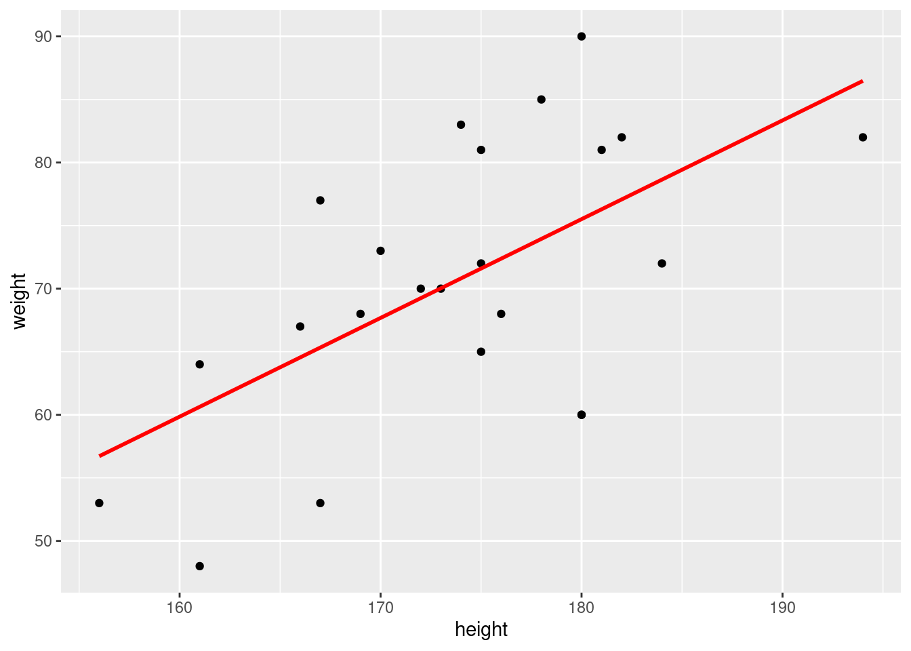
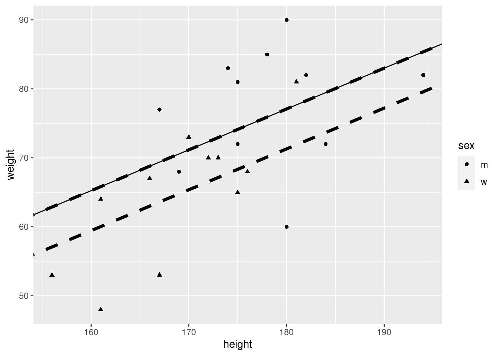
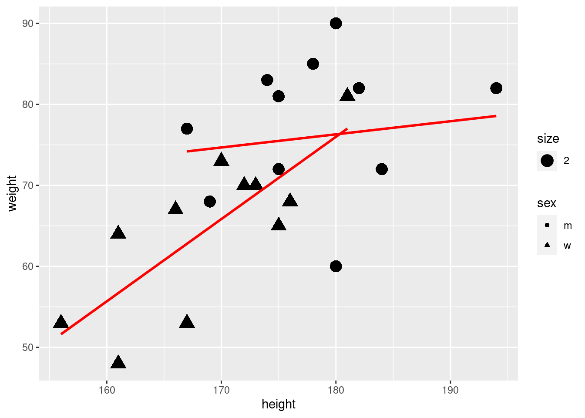
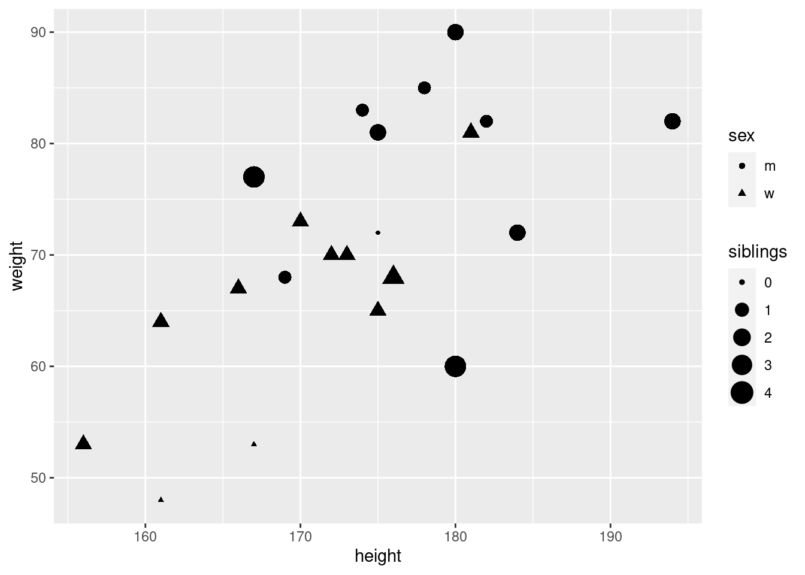
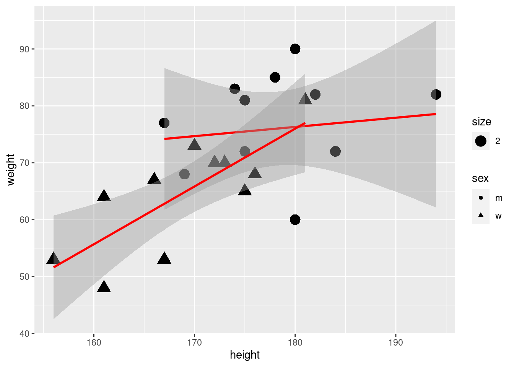
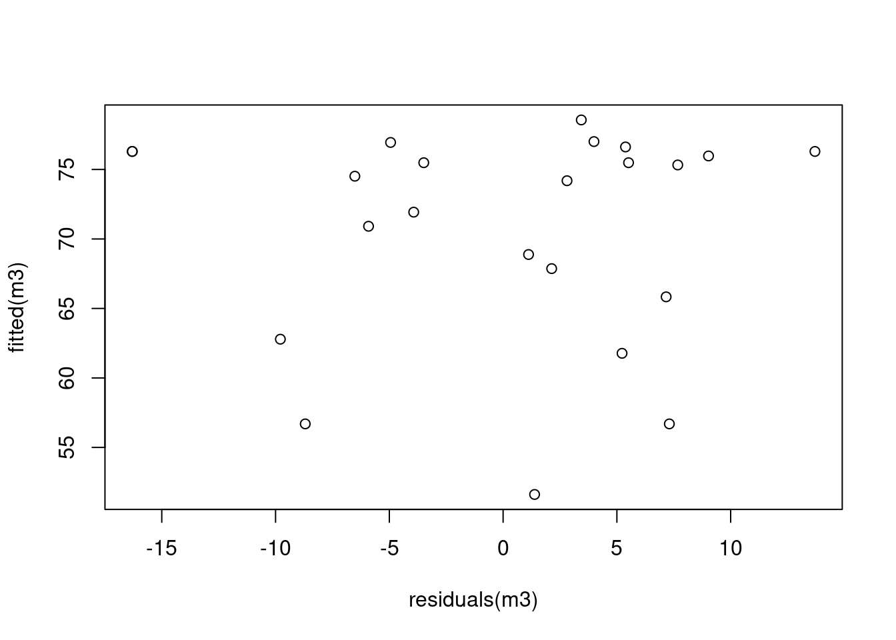
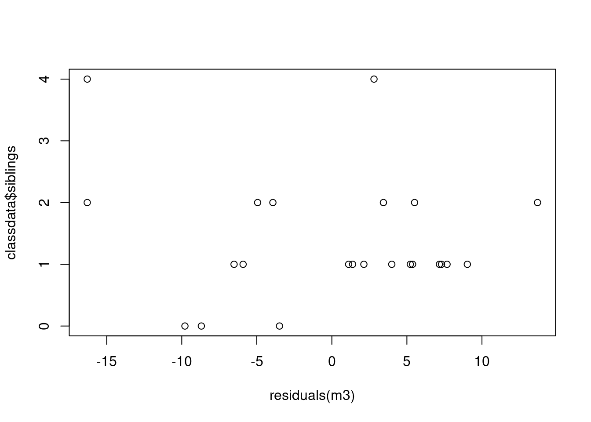

19 Script: regress_lecture.R
## ---- echo = TRUE--------------------------------------------------
# install and load packages
if (!require(pacman)) install.packages("pacman")
pacman::p_load(tidyverse, haven)
classdata <- read.csv("https://raw.githubusercontent.com/hubchev/courses/main/dta/classdata.csv")
head(classdata)## id sex weight height siblings row
## 1 1 w 53 156 1 g
## 2 2 w 73 170 1 g
## 3 3 m 68 169 1 g
## 4 4 w 67 166 1 g
## 5 5 w 65 175 1 g
## 6 6 w 48 161 0 g## id sex weight height siblings row
## Min. : 1.0 Length:23 Min. :48.00 Min. :156.0 Min. :0.000 Length:23
## 1st Qu.: 6.5 Class :character 1st Qu.:64.50 1st Qu.:168.0 1st Qu.:1.000 Class :character
## Median :12.0 Mode :character Median :70.00 Median :175.0 Median :1.000 Mode :character
## Mean :12.0 Mean :70.61 Mean :173.7 Mean :1.391
## 3rd Qu.:17.5 3rd Qu.:81.00 3rd Qu.:180.0 3rd Qu.:2.000
## Max. :23.0 Max. :90.00 Max. :194.0 Max. :4.000## ----pressure, echo=TRUE-------------------------------------------
library("ggplot2")
ggplot(classdata, aes(x=height, y=weight)) + geom_point() 
## ---- echo=TRUE----------------------------------------------------
ggplot(classdata, aes(x=height, y=weight)) +
geom_point() +
stat_smooth(formula=y~x, method="lm", se=FALSE, colour="red", linetype=1)
## ---- echo=TRUE----------------------------------------------------
## baseline regression model
model <- lm(weight ~ height + sex , data = classdata )
show(model)##
## Call:
## lm(formula = weight ~ height + sex, data = classdata)
##
## Coefficients:
## (Intercept) height sexw
## -29.5297 0.5923 -5.7894interm <- model$coefficients[1]
slope <- model$coefficients[2]
interw <- model$coefficients[1]+model$coefficients[3]
## ---- echo=TRUE----------------------------------------------------
summary(model)##
## Call:
## lm(formula = weight ~ height + sex, data = classdata)
##
## Residuals:
## Min 1Q Median 3Q Max
## -17.086 -3.730 2.850 7.245 12.914
##
## Coefficients:
## Estimate Std. Error t value Pr(>|t|)
## (Intercept) -29.5297 47.6606 -0.620 0.5425
## height 0.5923 0.2671 2.217 0.0383 *
## sexw -5.7894 4.4773 -1.293 0.2107
## ---
## Signif. codes: 0 '***' 0.001 '**' 0.01 '*' 0.05 '.' 0.1 ' ' 1
##
## Residual standard error: 8.942 on 20 degrees of freedom
## Multiple R-squared: 0.4124, Adjusted R-squared: 0.3537
## F-statistic: 7.019 on 2 and 20 DF, p-value: 0.004904## ---- echo=TRUE----------------------------------------------------
ggplot(classdata, aes(x=height, y=weight, shape = sex)) +
geom_point() +
geom_abline(slope = slope, intercept = interw, linetype = 2, size=1.5)+
geom_abline(slope = slope, intercept = interm, linetype = 2, size=1.5) +
geom_abline(slope = coef(model)[[2]], intercept = coef(model)[[1]]) ## Warning: Using `size` aesthetic for lines was deprecated in ggplot2 3.4.0.
## ℹ Please use `linewidth` instead.
## This warning is displayed once every 8 hours.
## Call `lifecycle::last_lifecycle_warnings()` to see where this warning was generated.
## ---- echo=TRUE----------------------------------------------------
ggplot(classdata, aes(x=height, y=weight, shape = sex)) +
geom_point( aes(size = 2)) +
stat_smooth(formula = y ~ x, method = "lm",
se = FALSE, colour = "red", linetype = 1)
## ---- echo=TRUE----------------------------------------------------
ggplot(classdata, aes(x=height, y=weight, shape = sex)) +
geom_point( aes(size = siblings)) 
## ---- echo=TRUE----------------------------------------------------
## baseline model
model <- lm(weight ~ height + sex , data = classdata )
ggplot(classdata, aes(x=height, y=weight, shape = sex)) +
geom_point( aes(size = 2)) +
stat_smooth(formula = y ~ x,
method = "lm",
se = T,
colour = "red",
linetype = 1)
## ---- echo=TRUE, results='hide'------------------------------------
m1 <- lm(weight ~ height , data = classdata )
m2 <- lm(weight ~ height + sex , data = classdata )
m3 <- lm(weight ~ height + sex + height * sex , data = classdata )
m4 <- lm(weight ~ height + sex + height * sex + siblings , data = classdata )
m5 <- lm(weight ~ height + sex + height * sex , data = subset(classdata, siblings < 4 ))
library(sjPlot)
tab_model(m1, m2, m3, m4, m5,
p.style = "stars",
p.threshold = c(0.2, 0.1, 0.05),
show.ci = FALSE,
show.se = FALSE) | weight | weight | weight | weight | weight | |
|---|---|---|---|---|---|
| Predictors | Estimates | Estimates | Estimates | Estimates | Estimates |
| (Intercept) | -65.44 * | -29.53 | 47.14 | 50.27 | 27.69 |
| height | 0.78 *** | 0.59 *** | 0.16 | 0.16 | 0.28 |
| sex [w] | -5.79 | -153.96 ** | -161.92 ** | -134.51 * | |
| height × sex [w] | 0.85 * | 0.89 * | 0.74 * | ||
| siblings | -1.16 | ||||
| Observations | 23 | 23 | 23 | 23 | 21 |
| R2 / R2 adjusted | 0.363 / 0.333 | 0.412 / 0.354 | 0.487 / 0.407 | 0.496 / 0.385 | 0.572 / 0.497 |
|
|||||
## ---- echo=FALSE---------------------------------------------------
tab_model(m1, m2, m3, m4,
p.style = "stars",
p.threshold = c(0.2, 0.1, 0.05),
show.ci = FALSE,
show.se = FALSE) | weight | weight | weight | weight | |
|---|---|---|---|---|
| Predictors | Estimates | Estimates | Estimates | Estimates |
| (Intercept) | -65.44 * | -29.53 | 47.14 | 50.27 |
| height | 0.78 *** | 0.59 *** | 0.16 | 0.16 |
| sex [w] | -5.79 | -153.96 ** | -161.92 ** | |
| height × sex [w] | 0.85 * | 0.89 * | ||
| siblings | -1.16 | |||
| Observations | 23 | 23 | 23 | 23 |
| R2 / R2 adjusted | 0.363 / 0.333 | 0.412 / 0.354 | 0.487 / 0.407 | 0.496 / 0.385 |
|
||||
## ---- echo=FALSE---------------------------------------------------
tab_model(m3, m5,
p.style = "stars",
p.threshold = c(0.2, 0.1, 0.05),
show.ci = FALSE,
show.se = FALSE) | weight | weight | |
|---|---|---|
| Predictors | Estimates | Estimates |
| (Intercept) | 47.14 | 27.69 |
| height | 0.16 | 0.28 |
| sex [w] | -153.96 ** | -134.51 * |
| height × sex [w] | 0.85 * | 0.74 * |
| Observations | 23 | 21 |
| R2 / R2 adjusted | 0.487 / 0.407 | 0.572 / 0.497 |
|
||
## ---- echo=T-------------------------------------------------------
plot(residuals(m3), fitted(m3))

## ----eval=FALSE----------------------------------------------------
# rmarkdown::render("regress_lecture.Rmd", "all")
# unload packages
pacman::p_unload(tidyverse, haven)## The following packages have been unloaded:
## tidyverse, haven